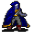

Ehrenfest¶Where to find Ehrenfest: Prim: blackwater_mountain11, blackwater_mountain43, elm5f_2, elm_mine1
{ .sprite }
| Type | NPC (can be spoken to; cannot be attacked) |
| Found in | Prim |
| Entry ID | ehrenfest |
| Introduced | v0.7.14 |
Locations¶
| Map | Region | Up to | Notes |
|---|---|---|---|
| blackwater_mountain11 | Prim | 1 | Appears later, during a quest |
| blackwater_mountain43 | – | 1 | Appears later, during a quest |
| elm5f_2 | – | 1 | – |
| elm_mine1 | – | 1 | Appears later, during a quest |
Quests¶
- Climbing up is forbidden: stages 6, 7, 10, 11, 15, 16, 20, 31, 33, 45, 46, 53
- Hidden: events in bwm (hidden flag): stages 5, 6, 7, 14, 21
Dialogue simulator¶
Set the quest stages, items and other conditions that apply to your game, then start the conversation with Ehrenfest. The simulator applies the game's own rules: it performs the same silent checks, offers only the options that would be shown in the game, and applies their effects (quest stages, items handed over, rewards) as the conversation proceeds.
Rules verified against v0.8.18 game code (ConversationController.java) and dialogue data.
Dialogue (126 lines)
What the dialogue says, exactly as in the game files. Lines are listed once; links jump to the line a choice leads to.
ehrenfest_selector_2 (silent check: the first matching branch below is taken)
- branch 1 (if reached stage 53 of Climbing up is forbidden) → omi2_fix_ehrenfest_53
- branch 2 (if reached stage 52 of Climbing up is forbidden) → ehrenfest_49
- branch 3 (if reached stage 34 of Climbing up is forbidden) → ortholion_conversation2_1
- branch 4 (if reached stage 40 of Climbing up is forbidden) → ortholion_conversation2_1
- branch 5 (if reached stage 33 of Climbing up is forbidden) → ehrenfest_46b
- branch 6 (if reached stage 32 of Climbing up is forbidden) → ehrenfest_39c
- branch 7 (if reached stage 14 of Hidden: events in bwm (hidden flag)) → ehrenfest_38a
- branch 8 (if reached stage 20 of Climbing up is forbidden) → ehrenfest_34
- branch 9 (if reached stage 16 of Climbing up is forbidden) → ehrenfest_30c
- branch 10 (if reached stage 15 of Climbing up is forbidden) → ehrenfest_25b
- branch 11 (if reached stage 11 of Climbing up is forbidden) → ehrenfest_11
- branch 12 (if reached stage 7 of Climbing up is forbidden) → ehrenfest_8
- branch 13 (if reached stage 7 of Hidden: events in bwm (hidden flag)) → ehrenfest_4
- branch 14 (if reached stage 6 of Hidden: events in bwm (hidden flag)) → ehrenfest_3b
- branch 15 (if latest stage of Climbing up is forbidden is 6) → ehrenfest_2b2
- branch 16 → ehrenfest_0
omi2_fix_ehrenfest_53 Ehrenfest: “You are wrong. I'm not here, just an illusion.” — effects: removes monsters from blackwater_mountain43, removes monsters from blackwater_mountain43
ehrenfest_49 Ehrenfest: “Hmm... $playername, I wonder how your brother Andor would react if he knew I had to kill you.”
- “What do you know about him?!” → ehrenfest_50a
- “So you're the guy that Lodar told me about.” (if reached stage 72 of Search for Andor) → ehrenfest_50b
- “I won't hear your lies. I'll finish you right here.” → ehrenfest_50c
ortholion_conversation2_1 General Ortholion: “Ehrenfest, you have come this far just to get rid of me...” — effects: removes monsters from blackwater_mountain31
- “Ehrenfest, here I am to help you.” (if reached stage 33 of Climbing up is forbidden) → ortholion_conversation2_2a
- “Ortholion, beware! He is a dangerous liar!” (if reached stage 40 of Climbing up is forbidden) → ortholion_conversation2_2b
ehrenfest_46b Ehrenfest: “Excellent, excellent! I will lead the way, meet me at Blackwater Settlement. Beware of the monsters.” — effects: sets stage 33 of Climbing up is forbidden, removes monsters from elm_mine1
- “Fine...Let's do this.” → NPC leaves
- “Same to you, those scared monsters will make way to me.” → NPC leaves
ehrenfest_39c Ehrenfest: “It's time to share what we've discovered.”
- “You are already aware of my information.” → ehrenfest_40b
- “What have you found out?” → ehrenfest_40c
ehrenfest_38a Ehrenfest: “I won't try to convince you. Now you must decide whether to help me or not. I won't ask twice, so make your choice wisely.” — effects: sets stage 14 of Hidden: events in bwm (hidden flag)
- “I don't trust you. I will find my own way to solve this.” (if NOT reached stage 32 of Climbing up is forbidden) → ehrenfest_39a
- “I'll think about it. See you soon.” → conversation ends
- “OK, I will help you. Let's solve this once for all.” (if NOT reached stage 31 of Climbing up is forbidden) → ehrenfest_39b
ehrenfest_34 Ehrenfest: “$playername, how is it going?” — effects: sets stage 20 of Climbing up is forbidden
- “Nothing interesting yet.” → ehrenfest_35a
- “You lied to me. There wasn't any missing couple.” (if reached stage 30 of Climbing up is forbidden) → ehrenfest_35b
ehrenfest_30c Ehrenfest: “Now that everything is told, let's find some answers.”
- “More chatting? No thanks.” → ehrenfest_31b
- “What's your proposal?” → ehrenfest_31a
ehrenfest_25b Ehrenfest: “Anything more you can tell me about that place?”
- “Give me some time to remember.” → ehrenfest_26b
- “The corpses were covered by cobwebs. They were probably tortured.” → ehrenfest_26a
ehrenfest_11 Ehrenfest: “Hello again my little friend. We'll be safe from prying ears here.”
- “Care to explain your reasons for stalking me?” → ehrenfest_12
ehrenfest_8 Ehrenfest: “Well, how did it go?”
- “Nothing of your concern. Bye.” → conversation ends
- “Good, don't bother me.” → conversation ends
- “No luck, but I heard a tense conversation between a Feygard general and one of the patrol captains.” (if reached stage 9 of Climbing up is forbidden) → ehrenfest_9
ehrenfest_4 Ehrenfest: “looks nervous I told you. Something big is about to happen. I believe it is somehow related to what you've seen up in the mountain.”
- “How did they reach this place?” → ehrenfest_5a
- “How do you know what I've seen?” → ehrenfest_5b
ehrenfest_3b Ehrenfest: “This is not a good place to talk about this. But trust me, there is much at stake and Prim's situation is only going to get worse. Let me introduce myself. My name is Ehrenfest, and...” — effects: sets stage 6 of Hidden: events in bwm (hidden flag)
- Next → ehrenfest_conversation_1
ehrenfest_2b2 Ehrenfest: “Look, I personally don't think that telling the guards is a good choice.” — effects: sets stage 6 of Climbing up is forbidden
- “Care to explain?” → ehrenfest_3b
- “I will try anyway, thanks.” → ehrenfest_3a
ehrenfest_0 Ehrenfest: “Damn it, kid! Watch your step. You almost knocked me over!” — effects: spawns monsters on blackwater_mountain11
- “Sorry, I am in a hurry.” → ehrenfest_1a
- “Watch my step? You'd better watch your tongue!” → ehrenfest_1b
ehrenfest_50a Ehrenfest: “If only you were stronger...Maybe I could convince you to join us, [cough] but I have to admit my plan was blaming you for Ortholion's death. You know, we're tired of you asking questions here and there, [cough] [cough].”
- Next → ehrenfest_51
ehrenfest_50b Ehrenfest: “Lodar, right. He sins of double morality! His poisons killed hundreds, but he prefers to hide in that dirty forest and escape any responsibility like a retired farmer.”
- Next → ehrenfest_50a
ehrenfest_50c Ehrenfest: “No you won't, sorry. My mission is done here. It was done weeks ago, but I...Someone decided I should stay and draw Feygard's attention here.”
- Next → ehrenfest_50a
ortholion_conversation2_2a Ehrenfest: “The crimes you have commited must be punished!”
- Next → ortholion_conversation2_3a
ortholion_conversation2_2b Ehrenfest: “I hoped someone else would take the blame for this. But don't worry, soon we shall be unstoppable.”
- “Stop!” → ortholion_conversation2_3b
- “Do you always talk this much, liar?” → ortholion_conversation2_3b
ehrenfest_40b Ehrenfest: “Hasn't anybody said anything else?”
- “No, nobody.” → ehrenfest_41a
- “Nothing important.” → ehrenfest_41c
ehrenfest_40c Ehrenfest: “I just confirmed my suspicion.”
- Next → ehrenfest_41b
ehrenfest_39a Ehrenfest: “I see...Good luck, you'll need it. [Ehrenfest walks slowly out of the room]” — effects: sets stage 31 of Climbing up is forbidden, removes monsters from elm_mine1
- “You're still being shady, huh. Goodbye.” → NPC leaves
- “Shadow be with you.” → ehrenfest_40a
ehrenfest_39b Ehrenfest: “Excellent. Let's share what we found out then.”
- “You're already aware of my information.” → ehrenfest_40b
- “I'm all ears.” → ehrenfest_40c
ehrenfest_35a Ehrenfest: “Don't give up. We'll eventually get some answers.”
ehrenfest_35b Ehrenfest: “You are right, but I didn't lie.”
- “How is it not a lie?” → ehrenfest_36
ehrenfest_31b Ehrenfest: “Okay, okay. Let's take a break. We'll talk later.”
- “Thank you.” → conversation ends
- “Do you have anything to trade?” → ehrenfest_32b
ehrenfest_31a Ehrenfest: “We must gather information. I am convinced Lorn's death has to do with what you saw down the hole.”
- Next → ehrenfest_32a
ehrenfest_26b Ehrenfest: “Fine, I'll be waiting here.”
ehrenfest_26a Ehrenfest: “Tortured, you say? That makes no sense!”
- “That's what I saw.” → ehrenfest_27a
- “I took some ropes to prove what I saw to the guards...” (if hand over 1× Blood-stained rope) → ehrenfest_27b
ehrenfest_12 Ehrenfest: “I only saw you by chance. Please, let me explain what happened.”
- “Sure, go on.” → ehrenfest_13a
- “I'm all ears.” → ehrenfest_13a
- “Get straight to the point.” → ehrenfest_13b
ehrenfest_9 Ehrenfest: “I did see that general leaving. Now his henchmen are patrolling the village entrance.”
- “They are up to no good.” → ehrenfest_10a
- “It's good to see they are protecting the villagers.” → ehrenfest_10b
ehrenfest_5a Ehrenfest: “I assume the same way you did.”
- Next → ehrenfest_6a
ehrenfest_5b Ehrenfest: “I've seen you climbing up the mountainside and going down the hole, of course! I was waiting for your return.”
- “All of this is getting too shady. I'd better leave.” → ehrenfest_6b
- “Continue, please.” → ehrenfest_6a
ehrenfest_conversation_1 General's henchman: “OUT OF THE WAY, COMMONERS!”
- Next → ehrenfest_conversation_1a
ehrenfest_3a Ehrenfest: “OK, kid. Do it, and I'll wait here for your return, heh. By the way, my name is Ehrenfest.” — effects: sets stage 7 of Climbing up is forbidden, spawns monsters on blackwater_mountain29, spawns monsters on blackwater_mountain29, spawns monsters on blackwater_mountain29, spawns monsters on blackwater_mountain29, spawns monsters on blackwater_mountain29, sets stage 5 of Hidden: events in bwm (hidden flag)
- “Do whatever you want, bye.” → conversation ends
- “OK.” → conversation ends
ehrenfest_1a Ehrenfest: “Umm, what's the matter?”
- “As I said, I don't have time to talk. I need to report something important.” → ehrenfest_2a
- “Nothing of your concern. I must go inside.” → ehrenfest_2a
- “I have discovered something suspicious inside the mountain.” → ehrenfest_2b
ehrenfest_1b Ehrenfest: “Not only blind but bad-mannered too! You remind me of myself when I was younger. I was not blind, though, ha ha ha!”
- Next → ehrenfest_1b2
ehrenfest_51 Ehrenfest: “Don't look at me that way, kid...[laughs]. This is too complicated for a young mind.”
- “Die!” → ehrenfest_52
- “How dare you!” → ehrenfest_52
ortholion_conversation2_3a General Ortholion: “Hmmm... What crimes, evil creature? You even dared to think you had a chance to trick a general of glorious Feygard?!”
- Next → ortholion_conversation2_4a
ortholion_conversation2_3b General Ortholion: “[unsheathes his sword] Well, enough talk. I won't ignore your threats, evil creature.”
- “Hey, stop you two!” → ortholion_conversation2_4b
- “Ehrenfest, you have many things to explain!” → ortholion_conversation2_4b
ehrenfest_41a Ehrenfest: “Then, it seems I've been the lucky one this time.”
- “What did you find out?” → ehrenfest_41b
ehrenfest_41c Ehrenfest: “Are you sure?”
- “Yes. Please, tell me what you've discovered.” → ehrenfest_41b
ehrenfest_41b Ehrenfest: “Both villagers and guards seemed pretty uneasy when I asked about the Feygard soldiers' presence.”
- Next → ehrenfest_42
ehrenfest_40a Ehrenfest: “It is, it will.”
- “You're still being shady, huh.” → NPC leaves
ehrenfest_36 Ehrenfest: “Remember while you were asking for Lorn, I asked some villagers precisely about that missing couple.”
- “I'm not going to hear your stories anymore.” → ehrenfest_37a
- “What I remember is you, telling me about that missing couple.” → ehrenfest_37a
ehrenfest_32b Ehrenfest: “I'm afraid not.”
- “OK, we'll talk later.” → conversation ends
ehrenfest_32a Ehrenfest: “You will have to talk to the villagers of Prim. We have to find out what happened to Lorn's partners, about whom we know nothing yet.”
- “What will you do?” → ehrenfest_33a
- “Sounds boring, but I'll do it.” → ehrenfest_33b
- “Fine. I'll go.” → ehrenfest_33b
ehrenfest_27a Ehrenfest: “Are you sure?”
- “Yes, look at this blood-stained rope.” (if hand over 1× Blood-stained rope) → ehrenfest_27b
- “Yes, look at this blood-stained rope... Oh, I seem to have lost it. Just a second, I'll go and find it.” (if NOT carry 1× Blood-stained rope) → ehrenfest_27b
ehrenfest_27b Ehrenfest: “Just after witnessing my savior's death, I ran away and came back to the village.” — effects: sets stage 16 of Climbing up is forbidden
- “Did you tell the guards what you saw?” → ehrenfest_28a
- “Shame on you! You should have buried him at least.” → ehrenfest_28b
ehrenfest_13a Ehrenfest: “I arrived here several weeks ago for no particularly interesting reason. I am part of a family of explorers and travelers, and the story of a ruined tunnel infested by dangerous beasts was something I wanted to see with my own eyes.”
- Next → ehrenfest_14
ehrenfest_13b Ehrenfest: “Hmm, I will try.”
- Next → ehrenfest_13a
ehrenfest_10a Ehrenfest: “Most probably.”
- Next → ehrenfest_6a
ehrenfest_10b Ehrenfest: “Hah! I seriously doubt they are here just for that.”
- “Are you accusing the great soldiers of Feygard of anything? I'd better leave.” → conversation ends
- “What do you think?” → ehrenfest_6a
ehrenfest_6a Ehrenfest: “Look, this is not a safe place to talk. Meet me in the Elm mine, west of here, OK?”
- “I will think about it.” → ehrenfest_7a
- “OK, we will meet there.” → ehrenfest_7b
- “I hope this won't get any shadier.” → ehrenfest_7c
ehrenfest_6b Ehrenfest: “Do whatever you want, youngster. But two minds sometimes work better than one, and four eyes better than two...”
- Next → ehrenfest_6a
ehrenfest_conversation_1a Dummy NPC: “You and Ehrenfest are startled, and step aside. Three men with Feygard insignia leave the hall. You remain silent as they pass.”
- Next → ehrenfest_conversation_2
ehrenfest_2a Ehrenfest: “I see. But keep in mind that no one inside there will pay attention to you, whatever you say.”
- “Why is that?” → ehrenfest_2b2
- “You never know...” → ehrenfest_3a
- “Whatever, I will try anyway.” → ehrenfest_3a
ehrenfest_2b Ehrenfest: “Have you? He gets closer”
- Next → ehrenfest_2b2
ehrenfest_1b2 Ehrenfest: “I'll let it go. But tell me, what is it that you find so urgent?”
- “I don't trust you with something this important, so nothing.” → ehrenfest_2a
- “I have information related to recent disappearances.” → ehrenfest_2b
- “Sorry, it's important, so I must go.” → ehrenfest_2a
ehrenfest_52 Ehrenfest: “How tetchy! The guards I tortured eventually understood my words... Maybe you should try that orangish substance too.”
- Next → ehrenfest_53
ortholion_conversation2_4a Ehrenfest: “I'm... [stares at you] $playername! It's time to end with all of this!”
- “Right! Ortholion must pay for killing innocent people from Prim!” → ortholion_conversation2_5a
- “Gladly. Ortholion, prepare to die!” (if reached stage 35 of Climbing up is forbidden) → ortholion_conversation2_5a2
ortholion_conversation2_4b Ehrenfest: “[People from the tavern start looking at the place where Ortholion and Ehrenfest are about to have a fight] [looks around] No...Not yet. Argh! You kid, betrayer! You are about to discover how wrongly you have chosen!”
- Next → ortholion_conversation2_5b
ehrenfest_42 Ehrenfest: “I strongly believe they're related to the disappearings.”
- “Why would they do this?” → ehrenfest_43
- “That has to be taken with a grain of salt.” → ehrenfest_43
ehrenfest_37a Ehrenfest: “$playername, I'm not lying!”
- “Again, you did. I cannot trust you.” → ehrenfest_38a
- “I can't be sure of that.” → ehrenfest_37a
ehrenfest_33a Ehrenfest: “I will ask in the inn about the missing couple that Lorn and his partners followed.”
- “I'd complain, but I prefer not to hear your explanation.” → ehrenfest_33b
- “Fine.” → ehrenfest_33b
ehrenfest_33b Ehrenfest: “Excellent. Let's meet again later, best of luck.” — effects: sets stage 20 of Climbing up is forbidden
- “Shadow be with you.” → conversation ends
- “Same to you.” → conversation ends
ehrenfest_28a Ehrenfest: “I tried, but they considered it an accident. My constant babbling did not help...”
- “Why did the guards not bury their partner?” → ehrenfest_29a
- “An accident?” → ehrenfest_29a
ehrenfest_28b Ehrenfest: “You are honestly right, but it's too late to go back...”
- “No, it's not.” → ehrenfest_29b
- “You didn't bury him, but why didn't the guards either?” → ehrenfest_29a
ehrenfest_14 Ehrenfest: “The rumors were true. Those gornauds are not natural creatures. They gave me a really hard time at first.”
- “Please go on.” → ehrenfest_15
- “What happened then?” → ehrenfest_15
ehrenfest_7a Ehrenfest: “OK, I'll be waiting for you there.” — effects: sets stage 11 of Climbing up is forbidden, spawns monsters on elm_mine1, removes monsters from blackwater_mountain11
- “Bye.” → NPC leaves
- “Shadow be with you.” → NPC leaves
ehrenfest_7b Ehrenfest: “Excellent. Try not to raise suspicions.” — effects: sets stage 11 of Climbing up is forbidden, spawns monsters on elm_mine1, removes monsters from blackwater_mountain11
- “You're the suspicious guy here.” → NPC leaves
- “OK, bye.” → NPC leaves
ehrenfest_7c Ehrenfest: “I'm afraid it will. Farewell.” — effects: sets stage 11 of Climbing up is forbidden, spawns monsters on elm_mine1, removes monsters from blackwater_mountain11
- “Uhh, great. Bye.” → NPC leaves
- “Shadow be with you.” → NPC leaves
- “See you later then.” → NPC leaves
ehrenfest_conversation_2 General Ortholion: “I will say it only once. No taverns, no exploring, no drama with those untrained Prim guards. And for the glory of our homeland, don't pursue any injured monster.”
- Next → ehrenfest_conversation_3
ehrenfest_53 ???: “Ehrenfest jumps off the cliff, sinking in the dark streams, leaving you in the middle of a word. You soon begin to hear steps. Someone's coming - maybe the Feygard reinforcements?” — effects: removes monsters from elm5f_2, removes monsters from blackwater_mountain43, removes monsters from blackwater_mountain43, sets stage 53 of Climbing up is forbidden, spawns monsters on elm5f_2, spawns monsters on elm5f_2
- “Check who is coming.” → conversation ends
- “Leave.” → conversation ends
ortholion_conversation2_5a General Ortholion: “A kid? You come with a kid accusing me of something I never heard about?”
- Next → ortholion_conversation2_6a
ortholion_conversation2_5a2 Dummy NPC: “General Ortholion ignores you and continues to speak to Ehrenfest.”
- Next → ortholion_conversation2_6a
ortholion_conversation2_5b General Ortholion: “[The general tries to land a strike on Ehrenfest, but he just cuts a piece of his cloak. Ehrenfest is gone] Hmpf...” — effects: sets stage 45 of Climbing up is forbidden, removes monsters from blackwater_mountain43
- “Eh... Greetings, general.” → ortholion_1
- “I thought Feygard generals were faster swinging their blades.” → ortholion_1
ehrenfest_43 Ehrenfest: “Put it this way. A weakened Prim will be easier to control. Although Lord Geomyr theoretically reigns over the whole land, his influence has its limits, as I'm sure you know well. Isolated regions like Prim have considerable independence.”
- Next → ehrenfest_44
ehrenfest_29a Ehrenfest: “Strange, isn't it? Really, they didn't seem to care about Lorn, or the other missing people. It was all the monsters' fault and that's all.”
- “There's something too shady in all of this.” → ehrenfest_30a
- “Guards, lazy as hell in every place I go.” → ehrenfest_30b
ehrenfest_29b Ehrenfest: “[Ehrenfest stays quiet with his head down]”
- “So ... Why didn't the guards bring Lorn's remains to the village?” → ehrenfest_29a
ehrenfest_15 Ehrenfest: “I managed to reach the other entrance of the tunnel, but with no potions or fresh food I thought it was the end. Luckily, a guy called Lorn rescued me and brought me here.”
- “That name seems familiar to me, somehow.” → ehrenfest_16
- “Now to the point, please.” → ehrenfest_16
ehrenfest_conversation_3 Ehrenfest: “I have a bad feeling about all this. These villagers might be hiding something. Tell the mountain scouts to wait for me at the tunnel entrance. They will escort me up to Blackwater Settlement.”
- Next → ehrenfest_conversation_4
ortholion_conversation2_6a General Ortholion: “Ehrenfest, you have bothered me more than I am willing to abide. Blackwater Settlement guards will take care of you.”
- “Those guards are no match for...” (if reached stage 21 of Hidden: events in bwm (hidden flag)) → ortholion_conversation2_7a
- “Die!” (if NOT reached stage 21 of Hidden: events in bwm (hidden flag)) → ortholion_conversation2_6a2
ortholion_1 Ehrenfest: “Look, I don't have time for you, but I don't kill kids, not yet. So step aside.”
- “Are you threatening me?” (if reached stage 34 of Climbing up is forbidden) → ortholion_4c
- “I'm here to inform you about Ehrenfest. He's probably behind some disappearances in Prim.” (if reached stage 40 of Climbing up is forbidden) → ortholion_2b
ehrenfest_44 Ehrenfest: “It is well known there is an ancient chamber dedicated to worship of the Shadow, which is probably Lord Geomyr's most powerful threat.”
- “What should we do?” → ehrenfest_45a
- “Maybe you're right...” → ehrenfest_45b
ehrenfest_30a Ehrenfest: “Yes. And that's why I need your help.”
- “What can I do?” → ehrenfest_31a
- “You should give me a reward just for listening to this tripe.” → ehrenfest_31b
ehrenfest_30b Ehrenfest: “Sometimes, heh. But still, something doesn't fit.”
- “Are you sure?” → ehrenfest_30a
- “Indeed. There's something shady in all of this.” → ehrenfest_30a
ehrenfest_16 Ehrenfest: “Due to my exhaustion, I rested in bed for days. I could hear the constant noise of the workers chatting, toasting with their mead jugs...”
- “Have you finished?” → ehrenfest_17a
- “Obviously you needed the rest.” → ehrenfest_17
ehrenfest_conversation_4 General's henchman: “Yes, my general.” — effects: sets stage 7 of Hidden: events in bwm (hidden flag), sets stage 10 of Climbing up is forbidden, spawns monsters on blackwater_mountain10, spawns monsters on blackwater_mountain10, spawns monsters on blackwater_mountain10, spawns monsters on blackwater_mountain10, spawns monsters on blackwater_mountain11, spawns monsters on blackwater_mountain11
- Next → ehrenfest_conversation_4a
ortholion_conversation2_7a Ehrenfest: “Bah! This is enough. $playername. Weren't you so strong? Pathetic. You only had to distract him and take the blame!”
- “W...What?!” → ortholion_conversation2_8a
- “Hah. I always knew you were far too shady to be an honest man.” → ortholion_conversation2_8a
ortholion_conversation2_6a2 Dummy NPC: “Just before starting to launch an attack, General Ortholion moves and disarms you with a single blow.” — effects: sets stage 21 of Hidden: events in bwm (hidden flag), applies condition confusion
- Next → ortholion_conversation2_7a
ortholion_4c Ehrenfest: “I have no time for this absurd talk. I must be sure this guy's road ends in the Elm mine.”
- “Do you need anything?” → ortholion_4a
- “Good luck then, bye.” → ortholion_5a
ortholion_2b Ehrenfest: “You mean that weakling is responsible of those missing people from Prim of whom I've been recently informed?”
- “I do.” → ortholion_3b2
- “Weakling? Haven't you seen how he escaped?” → ortholion_3b
ehrenfest_45a Ehrenfest: “That Feygard general said he was gonna climb up the mountain. We should follow him up to Blackwater Settlement and stop him.”
- “Stop him? You mean to kill him?” → ehrenfest_46a
- “I'd love to get rid of that Feygard scum.” → ehrenfest_46b
ehrenfest_45b Ehrenfest: “This is our best bet. I think we'd have to act before it's too late.”
- “What do you suggest?” → ehrenfest_45a
ehrenfest_17a Ehrenfest: “[He seems to be completely absorbed by his own monologue]”
- Next → ehrenfest_17
ehrenfest_17 Ehrenfest: “But the day I got up, completely recovered, the first thing I noticed was precisely the absence of those noises. The rooms next to me were dirty and empty. No one was in the dining room. The mine entrance was closed.”
- Next → ehrenfest_18
ehrenfest_conversation_4a Dummy NPC: “The three men continue on their way out of the village, completely ignoring your presence.”
- Next → ehrenfest_4
ortholion_conversation2_8a Ehrenfest: “Ortholion! How much is your life worth? How many people? Prove the honor of your glorious land. Come face me alone! No guards, no witnesses. [Ehrenfest leaps unnaturally high, passing above you, and disappears in the blink of an eye]” — effects: sets stage 45 of Climbing up is forbidden, removes monsters from blackwater_mountain43
- “Coward....” → conversation ends
- “So, it was a trick...” → conversation ends
ortholion_4a Ehrenfest: “Hmm...Maybe. You came up this far after all. Go warn my soldiers. They are settled in the tunnel entrance, south of Prim.”
- “This is getting too complicated. I'd better leave.” → conversation ends
- “I bet they'll pay attention to a kid like me, right?” → ortholion_6b
- “OK, I will.” → ortholion_6b
ortholion_5a Ehrenfest: “Not so fast. Seeing that you reached this place but my scouts couldn't, I think you will be of use.”
- “What if I don't want to help you?” → ortholion_6a
- “What is it?” → ortholion_6b
ortholion_3b2 Ehrenfest: “There's definitely something off with him. Another Shadow fanatic to get rid of, tsch.”
- “Shadow fanatic? Do you know him?” → ortholion_4d
- “Can I be of help?” → ortholion_4a
ortholion_3b Ehrenfest: “Nothing impressive. Loyal followers of the Shadow have their tricks, just as I have my own.”
- “The Shadow? Do you believe in that?” → ortholion_4b
- “Hope those tricks are better than your chasing abilities.” (if reached stage 21 of Hidden: events in bwm (hidden flag)) → ortholion_4c
ehrenfest_46a Ehrenfest: “What else could we do?”
- “Maybe try asking him?” → ehrenfest_47
- “Never mind, killing him is the safest choice.” → ehrenfest_46b
ehrenfest_18 Ehrenfest: “Arghest, the only man left here, pointed me towards Prim, so I decided to go and ask for my savior. Lamentably, he was no longer there.”
- Next → ehrenfest_19
ortholion_6b Ehrenfest: “Take this, and show it to the soldiers stationed near the mining tunnel entrance. Tell them I went to the Elm mine.” — effects: gives 1× Ortholion's signet, sets stage 46 of Climbing up is forbidden
- “Consider it done.” → NPC leaves
- “Hope they can understand. Bye.” → NPC leaves
ortholion_6a Ehrenfest: “Then I'll officially accuse you of betrayal and attempted murder against a Feygard general. I'll bring you to Feygard and you will never see your family again.”
- “How dare you?! Prepare to die!” → ortholion_7a
ortholion_4d Ehrenfest: “No. But it's quite obvious by the way he accused me.”
- “And what will you do, General Slowness?” → ortholion_4c
- “Well, this is not really my problem. Bye.” → ortholion_5a
- “Do you need any help?” → ortholion_4a
ortholion_4b Ehrenfest: “[Laughs quietly] Only simple minds would see things as black or white. Whether I believe or not, people do, and we in Feygard keep that in mind.”
- “OK. Now that you're aware of the situation, I'd better leave.” → ortholion_5a
- “What about "I don't have time to..."?” → ortholion_4c
ehrenfest_47 Ehrenfest: “Are you crazy or something? He would never talk to commoners like us!”
- “We will never know if we don't try.” → ehrenfest_48
- “You're right. It'll be better to get rid of him as soon as possible.” → ehrenfest_46b
- “You're the insane guy here, thinking we can beat a group of elite trained soldiers.” → ehrenfest_48
ehrenfest_19 Ehrenfest: “Some villagers said he and his patrol crew had left three days ago in search of a couple that climbed up the mountain. So I went to the local shop, I got some supplies and...”
- “Did you have any luck?” → ehrenfest_20a
- “Aren't you done yet?” → ehrenfest_20b
ortholion_7a Ehrenfest: “[The general effortlessly subdues you, and begins to laugh] Look, take this signet. With this, my soldiers stationed outside the mining tunnel entrance will believe your words. Tell them I went to the Elm mine.” — effects: applies condition confusion, gives 1× Ortholion's signet, sets stage 46 of Climbing up is forbidden
- “Hmpf...” → ortholion_8a
- “OK, OK. I will but please don't hurt me anymore.” → ortholion_8a
ehrenfest_48 Ehrenfest: “I think you need some time to think about it.”
- “Yes. We'd better talk later.” → conversation ends
- “Pfft, whatever. Let's do it.” → ehrenfest_46b
ehrenfest_20a Ehrenfest: “I suppose, if you want to call it that.”
- Next → ehrenfest_21
ehrenfest_20b Ehrenfest: “Are you gonna stop interrupting me?”
- “If that makes you finish sooner...” → ehrenfest_21
- “Sorry, continue.” → ehrenfest_21
ortholion_8a Ehrenfest: “Are you still here?! Go, go now!”
- “Eh...Right.” → NPC leaves
- “Someday you will regret your manners...” → NPC leaves
- “OK, OK! I'm going.” → NPC leaves
ehrenfest_21 Ehrenfest: “Well. After nearly two days of restless searching, I figured they may have already returned, so I started to climb down.”
- Next → ehrenfest_22
ehrenfest_22 Ehrenfest: “I fell off a cliff on a narrow path on the mountain side and ended up at the same plateau you climbed up to, where the corpse was. I could not believe what I was seeing.”
- Next → ehrenfest_23
ehrenfest_23 Ehrenfest: “Lorn lay next to me, just a few steps away. His armor was entirely covered in blood, flowing slowly to the ground out of his body.”
- “What about the campfire?” → ehrenfest_24a
- “What about the hole?” → ehrenfest_24b
- “Was he dead?” → ehrenfest_24c
ehrenfest_24a Ehrenfest: “There was a campfire, yes. Now that I think about it, it could have belonged either to the couple or to the patrol crew.”
- “Was Lorn dead?” → ehrenfest_24c
- “What about the hole?” → ehrenfest_24b
ehrenfest_24b Ehrenfest: “I didn't dare to go down the hole...”
- “What about the campfire?” → ehrenfest_24a
- “Was Lorn dead when you found him?” → ehrenfest_24c
- “I found some dead bodies inside.” → ehrenfest_25a
ehrenfest_24c Ehrenfest: “Almost... I took his armor off. His injuries were severe. I tried to cure him using my potions but they weren't strong enough. He died, failing to express his final thoughts in words.”
- Next → ehrenfest_24c2
ehrenfest_25a Ehrenfest: “Yes, I was about to ask you... Continue.” — effects: sets stage 15 of Climbing up is forbidden
- “The corpses were covered by cobwebs, but I could see signs of torture.” → ehrenfest_26a
ehrenfest_24c2 Ehrenfest: “But everything he couldn't say with words was said by the terrified glance he threw at that dark hole, just before his last breath.”
- “What about the hole?” → ehrenfest_24b
- “What about the campfire?” → ehrenfest_24a
Version history¶
| Version | Change |
|---|---|
| v0.7.14 | Added Dialogue: 125 lines added |
| v0.7.15 | Dialogue: 1 line added, 4 lines changed · text: “looks nervious I told you. Something big is about to happen. I beli…” → “looks nervous I told you. Something big is about to happen. I belie…” |
| v0.7.17 | Dialogue: 3 lines changed · text: “Lorn lay next to me, just a few meters away. His armor was entirely c…” → “Lorn lay next to me, just a few steps away. His armor was entirely co…” |
| v0.8.4 | Dialogue: 1 line changed · text: “Just before starting to launch any attack, General Ortholion moves an…” → “Just before starting to launch an attack, General Ortholion moves and…” |
| v0.8.12.1 | Dialogue: 8 lines changed · text: “[People from the tavern start looking at the place where Ortholion an…” → “[People from the tavern start looking at the place where Ortholion an…” · text: “unsheathes his sword Well, enough talk. I won't ignore your threats…” → “[unsheathes his sword] Well, enough talk. I won't ignore your threats…” |
Verified against v0.8.18 and every earlier release back to v0.7.0 (game data compared release by release).
Technical information
| Entry ID | ehrenfest |
| Spawn group | ehrenfest |
| Loot table | – |
| Conversation | ehrenfest_selector_2 |
| Faction | – |
| Movement | none |
| Icon | monsters_tometik1:86 |
| Defined in | res/raw/monsterlist_omi2.json |
Raw data:
{
"id": "ehrenfest",
"name": "Ehrenfest",
"iconID": "monsters_tometik1:86",
"monsterClass": "humanoid",
"movementAggressionType": "none",
"spawnGroup": "ehrenfest",
"phraseID": "ehrenfest_selector_2"
}
Community notes¶
Written by players, not generated from game data. Observations: what players notice in-game · Lore: the in-world story · Trivia: real-world facts, references, development history · Theory / speculation: unconfirmed ideas; may just be unfinished content
Observations¶
No notes yet. Contributions are welcome: add a note.
Lore¶
No notes yet. Contributions are welcome: add a note.
Trivia¶
No notes yet. Contributions are welcome: add a note.
Theory / speculation¶
No notes yet. Contributions are welcome: add a note.
Data from v0.8.18